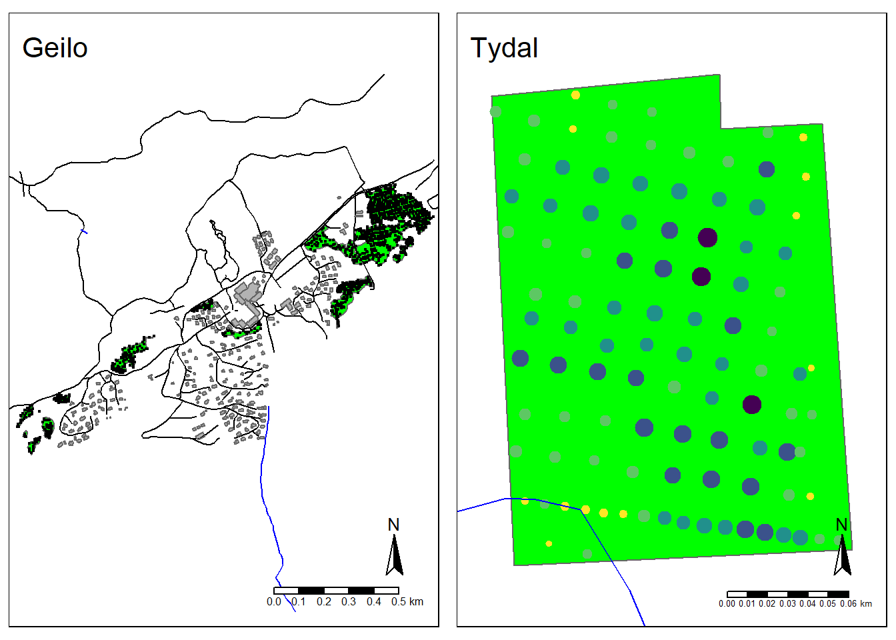

3 Peat volume
We want to intrapolate values from the depth measurement only a raster grid. From this we can estimate the total volume of the peatland, and also visualise the depth profiles.
3.1 Raster grid
Create raster grid based on the extent of the peatland
#Create empty raster grid (stars object) based on the extent of the peatland shape files. Resolution 1 = 1 m (becasue crs is UTM)
grid_Tydal_stars <- starsExtra::make_grid(SHP_tydal, 1)
grid_Geilo_stars <- starsExtra::make_grid(SHP_geilo, 1)Visualise the grid
# To plot the grid we can convert the stars objects to sf. That way we can plot as polygons and visualise the individual cells.
# This takes too long to perform for Geilo, but we can do it for Tydal:
grid_Tydal_sf <- st_as_sf(grid_Tydal_stars)
tm_shape(grid_Tydal_sf)+
tm_polygons()+
tm_shape(SHP_tydal)+
tm_polygons(col="yellow",
alpha=.5)

Figure 3.1: A 1x1 m raster grid in grey, overlayed with the peatland delineation in yellow.
grid_Tydal_stars_crop <- sf::st_crop(grid_Tydal_stars, SHP_tydal)
grid_Geilo_stars_crop <- sf::st_crop(grid_Geilo_stars, SHP_geilo)
tmap_arrange(
tm_shape(grid_Geilo_stars_crop)+
tm_raster(palette = "blue")+
tm_layout(title = "Geilo",
legend.show = F),
tm_shape(grid_Tydal_stars_crop)+
tm_raster(palette = "red")+
tm_layout(title = "Tydal",
legend.show = F))
#> stars object downsampled to 1369 by 730 cells. See tm_shape manual (argument raster.downsample)
#> stars object downsampled to 1369 by 730 cells. See tm_shape manual (argument raster.downsample)
Figure 3.2: Preview of the cropped raster grids.